本章前两节我们研究了一些重要的简单几何体, 主要是棱柱、棱锥、圆柱和圆锥. 这些几何体又可分为多面体与旋转体.
1 多面体
容易看出, 一个多面体至少有四个面. 这是因为, 如果在一个多面体中任意选定一个面, 那么这个面至少有三条边, 即它的边界上至少有多面体的三条棱. 每条棱还是这个面与另一个面的交线, 于是得到了另外三个面. 这三个面互不重合, 否则有一个面与预先选定的面有两条公共棱, 从而与选定的面重合, 这是不可能的. 于是, 我们至少在这个多面体上找到了四个面.
由此可见, 面数最少的多面体是四面体, 即三棱锥. 四面体在立体几何中的作用相当于三角形在平面几何中的作用. 例如, 平面上的多边形都可以由三角形拼合而成, 而空间中的多面体都可以由四面体拼合而成.
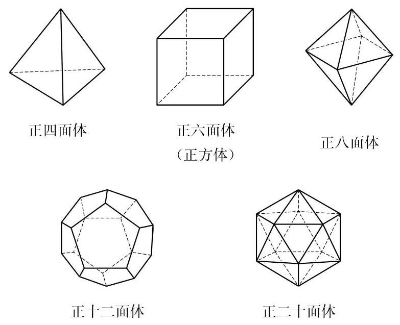
图 11-3-1
2 旋转体
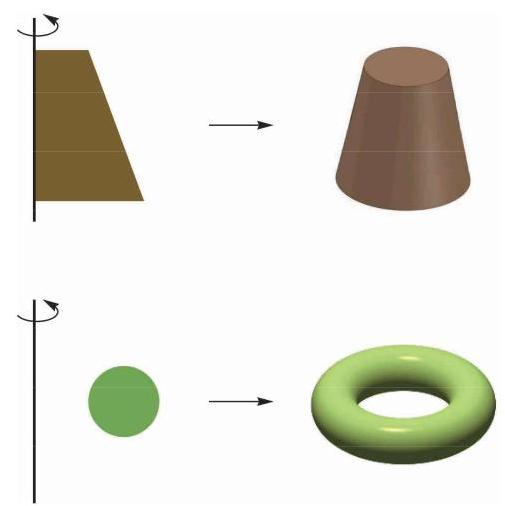
图 11-3-2
在车床加工零件或陶瓷工坊制作陶器时, 我们都可以直观地体验旋转体和它的轴.
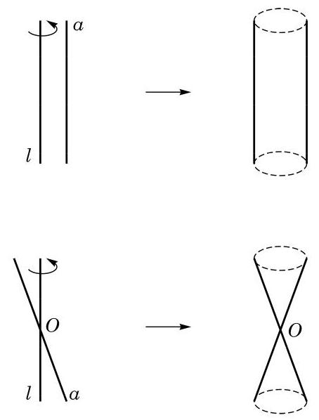
图 11-3-3
课后阅读
多面体的欧拉定理
多面体的世界是丰富多彩的, 但会遵循一些非常简单的基本规律, 多面体的欧拉定理就描述了这样一个规律.
多面体的欧拉定理: 简单多面体的顶点数 、棱数 与面数 有关系
这里首先要知道什么是“简单多面体”. 要弄清这个概念, 设想多面体的面都是用具有良好弹性的橡胶做成的. 如果往这个多面体充足够多的气体以后能够使这个多面体膨胀成一个球体, 那么这个多面体就是一个简单多面体.
我们迄今所见的多面体(如棱柱、棱锥、正多面体等)都是简单多面体. 但要构造一个非简单多面体也不难. 如图 11-3-4, 这是一个中间有一个长方体空洞的十六面体, 往这样的橡胶多面体充气，得到的是一个游泳圈，而不是球. 算一算，对于图 11-3-4 的多面体, 等于多少.
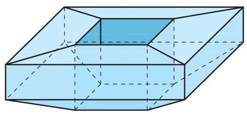
图 11-3-4
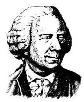
欧拉 (L. Euler, 1707 — 1783), 瑞士数学家，是科学史上最多产的一位杰出数学家， 在许多领域都作出了奠基性的贡献.
多面体的欧拉定理及其推广是拓扑学中的重要定理, 其所揭示的“欧拉示性数”已成为拓扑学的基础概念.
有了多面体的欧拉定理,再对正多面体的顶点数 、棱数 、面数 以及每面的边数和每顶点聚集的棱数之间的关系做一些分析, 就可以证明正多面体只有图 11-3-1 所示的 5 种, 有兴趣的同学不妨一试. 正多面体的相关数据如表 11-1 所示:
表 11-1
| 类型 | 面数 | 棱数 | 顶点数 | 每面边数 | 每顶点棱数 |
| 正四面体 | 4 | 6 | 4 | 3 | 3 |
| 正六面体 | 6 | 12 | 8 | 4 | 3 |
| 正八面体 | 8 | 12 | 6 | 3 | 4 |
| 正十二面体 | 12 | 30 | 20 | 5 | 3 |
| 正二十面体 | 20 | 30 | 12 | 3 | 5 |
练习 11.3
练习11.3 · 1
- 我国古代数学著作《九章算术》中研究过一种叫“鳖 (biē) 臑(nào)”的几何体 (见《九章算术》卷第五“商功”之一六)，它指的是由四个直角三角形围成的四面体. 用你学过的立体几何知识说明这种四面体确实存在.
练习11.3 · 2
- 有两个面平行, 其余各面都是平行四边形的多面体一定是柱体吗? 请给出你的理由或反例.
练习11.3 · 3
- 如图是一个置于地面上的救生圈, 它是绕一条垂直于地平面的直线 旋转而成的旋转体.
(1)如果用一个经过旋转轴 的平面去截这个救生圈, 得到的截面是什么图形? 请画出示意图.
(2)如果用一个平行于地面的平面去截这个救生圈, 得到的截面可能是什么图形? 请画出示意图.
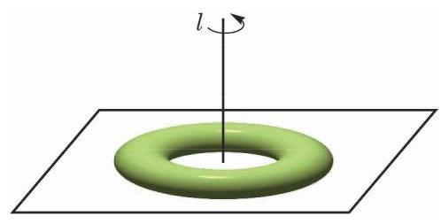
(第 3 题)
习题 11.3
A 组
习题11.3A · 1
- 如图,以正方体 六个面的中心为顶点所构成的多面体有多少条棱和多少个面? 设正方体的棱长为 1,设个多面体的表面积和体积是多少?
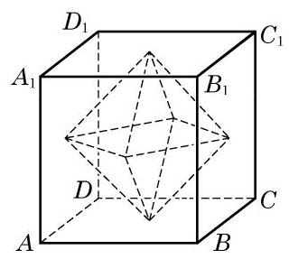
(第 1 题)
习题11.3A · 2
- 如图,设 分别是正方体 的共点的三条棱 、 的中点,过这三个点的平面截正方体得到的一个“角”是四面体 . 设正方体的棱长为 1 .
(1)求证:四面体 是以 为顶点、以 为底面的正三棱锥；
(2)在四面体 中，求顶点 到底面 的距离；
(3)如果将正方体按照题设的方法截去八个“角”，那么剩余的多面体有几个顶点、几条棱、几个面? 并求这个剩余多面体的表面积与体积.
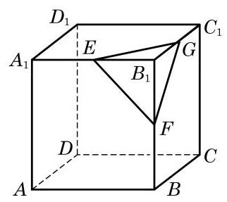
(第 2 题)
习题11.3A · 3
- 在如图所示的多面体中, 已知 ABCD 为矩形, 和 为全等的等腰梯形, . 求此多面体的表面积与体积.
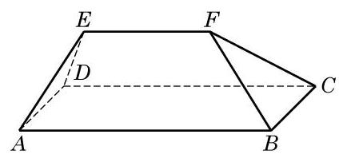
(第 3 题)
习题11.3A · 4
- 一个直角三角形有一个 的内角,这个内角所对直角边的长度为 1 . 把这个三角形绕其斜边旋转一周, 求所得旋转体的表面积与体积.
B 组
习题11.3B · 1
- 如图, 给定一个正方体形状的土豆块, 只切一刀, 可以得到下面哪些类型的多面体?
① 四面体; ② 四棱锥; ③ 四棱柱;
④ 五棱锥; ⑤ 五棱柱; ⑥ 六棱锥；
⑦ 七面体.
___(找出可能的结果，并将序号填在横线上)
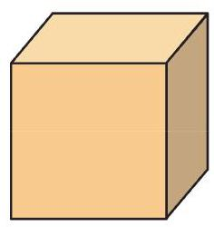
(第 1 题)
习题11.3B · 2
- 如图, 有两张全等的正三角形纸片, 按照下面两种方法分别将它们剪拼成一个三棱锥和一个三棱柱. 试比较这两个多面体的体积的大小.
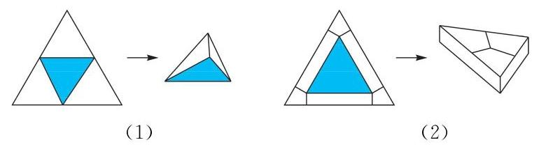
(第 2 题)